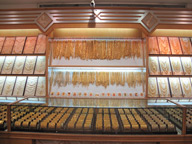
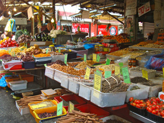
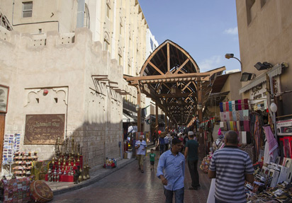

Es el mercat h’on es troba la major part de las joies en Dubai. La seva especialitat es l’or. Hi ha més de 300 botigues que formen el soc de l’or, i han atorgat a Dubai el sobrenom de "Ciutat de l'Or".
El socs de les especies és la combinació perfecte de colors, sabors i aromes.
Es un espai colorit i ple de caràcter, esta situat al costat de Bur Dubai a l’orilla de Dubai Creek. Aquests llocs eren el punt del intercanvi, però també eren el lloc on la gent es posaven al dia amb el esdeveniments. En l'actualitat resulta interessant submergir-se en l'ambient bulliciós i animat del Soc de Bur Dubai i apuntar-se al regateig més de realitzar excel·lents fotos de record.